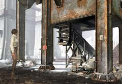

| 概要 | 地図 |
| 淡いヒント集 | ヒント集 | 的確なヒント集 |
| 攻略最短ルート |
| 場所選択に戻る |
ロマンスバーグ(前半)
|
トラブルに巻き込まれ
下へ移動したあなたは、様々な人と出会うだろう。彼らが全てあなたに友好的とは限らない。むしろ、あなたを利用しようとする者もいるはずだ。 オスカーの言うとおり、できるだけ早くこの町から立ち去った方がいいのかもしれない。あなたがやらねばならないことは、 ・石炭の装置が動かない理由を突き止める ・ガソリンがある家を探す ・ガソリンを調達(拝借)する ・石炭を入れた後、いなくなったハンスを探す ということである。

・石炭を動かす装置である。 ・操作できる部分はどこだろうか。また、なぜ動いていないのだろうか。 ・どうすれば動くようになるだろうか。 ・原因はガス欠であった。 ・ガソリンはどこにあるだろうか。町の人に聞くのがいいだろう。  ・大佐はあまりあなたに友好的でない。 ・そうすると、上の二人に限られるだろう。  
・どうやれば家の中に入れるだろうか。 ・入れてもらうために必要なことがあるとは思えない。 ・侵入するにしても、壁で囲まれているので容易ではないだろう。 ・ヒントはオープニングの意外なところに隠されている。 
・家の中に入っても、どうやって拝借するかという問題がある。 ・画面をよく見て、動いているものを調べてみよう。 ・人間以外に動いているものが見えるはずだ。それを利用できないだろうか。 あとは、ハンスを探すだけである。これは、さほど難しくない。 |
| 場所選択に戻る |
| 概要 | 地図 |
| 淡いヒント集 | ヒント集 | 的確なヒント集 |
| 攻略最短ルート |
Syberia II
| 目次へ戻る | ページの上部へ |